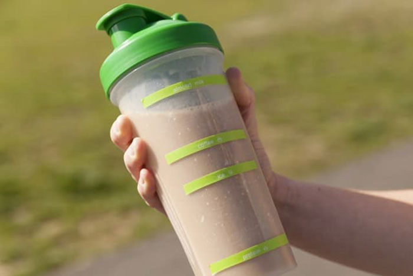

Post-workout Protein Shake

A very tasty, nutritious and quick post-workout shake that doesn't require a blender
Ingredients:
- 200ml of water
- 200ml of milk or milk substitute
- 40g of the protein powder of your choice
- 1 medium banana (mashed)
- Optional: a pinch of cinnamon
Steps:
- Mash banana with fork until smooth
- Place water and milk on a blender bottle
- Place protein powder and mashed banana on the bottle
- Optional: add a pinch of cinnamon for better taste
- Shake until smooth
- Drink from the bottle or serve in a tall glass